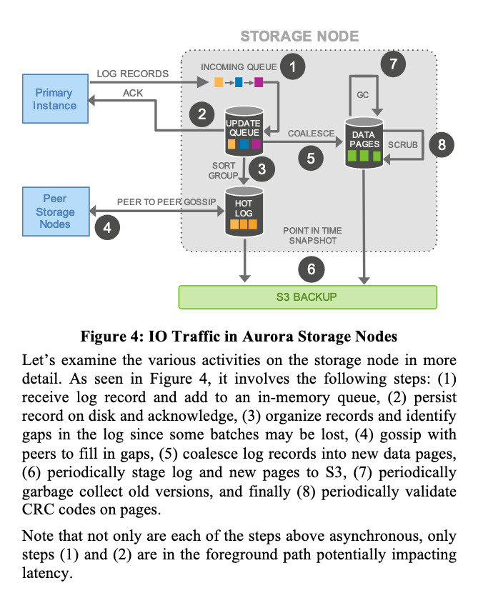

The following is my overly simplified summary of paper reading.
Aurora is a geo-distributed SQL database that supports replication, high-availability, and transactions, with its distributed design around replicating the database WAL log.
References
- Course Syllabus: https://pdos.csail.mit.edu/6.824/schedule.html
- Video Lectures: https://www.youtube.com/channel/UC_7WrbZTCODu1o_kfUMq88g/videos
- Lecture: https://www.youtube.com/watch?v=jJSh54J1s5o
Design Choices
- Saving data on EBS is too slow, unreliable, and generates too much traffic.
- Building Storage as an independent Fault-Tolerant self healing service across data-centers.
- Writing only redo log to disk, and across the network across AZs (Availability Zones).
The Log is the Database
Original design to mirror data on EBS is slow, unreliable, and incurs expensive network overheads.
The log is the Database: write only redo log to disk and across the network. Backup disk to s3 on the background.
Durability, Replication and Quorum Model
- Traditional Quorum is inadequate: Doesn’t prevent total AZ (Availability Zone) failure.
- 2 * 3 architecture: 3 different AZ, 2 nodes per AZ, 6 way copy. Vw=4, Vr=3. Need 4 nodes to write, 3 nodes to read.
- So that Write is Available even when AZ goes down. Read even when AZ + 1.
Partitioning
Partition the database volumes to small fixed size segments called PGs (Protection Groups), each PG is replicated 6 ways across 3 AZs.
PGs are implemented as storage nodes with EC2 VMs, and attached SSDs.
Partitioning also helps reducing the MTTF (Mean Time to Failure) to reduce probability of losing quorum.
Storage Service Design Points
- Move majority of the storage processing to the background.
- Every task is asynchronous processing.
- Foreground processing writes to the updated queue. Background handles compacting, GC, backup, etc, which doesn’t impact latency.

Log System Design Details
Problem: how to implement consistency on logs, without expensive 2PC, and how to handle recovery process.
Solution
Terminology:
- LSN: Use monotonically increasing LSN (Log Sequence Number) for each Log entry.
- VCL: Volume Complete LSN: the highest LSN for which it can guarantee availability of all prior log records. Since all log replication is async, not all log entries are replicated before later log entries are replicated.
- MTR: Mini-transactions. Each database-level transaction is broken up into multiple mini-transactions that are ordered an must be performed atomically.
- CPL: Consistency Point LSNs. The LSN points that allows truncations, as mini-transactions can span across multiple LSNs, and should be performed atomically. The final log record of a MTR (mini-transaction) is marked as CPL.
- VDL: Volume Durable LSN. The highest CPL ≤ VCL, that is, it’s complete, and is the last log record that supports truncation to ensure the completeness of a MTR. During a recovery, logs after VDLs are truncated. It ensures all log records ≤ VDL are complete (all records all replicated), and doesn’t break MTRs (marked by CPL).
Writes:
- Continuously logs to the storage service, establish write quorum for all writes, and register transactions as committed, therefore advancing VDL.
- Limits concurrent LSNs that are higher than current VDL (concurrently writing but didn’t yet establish quorum).
Commits:
- Aurora handles transaction commits asynchronously.
- When a client commits a transaction, the thread handling the commit requests sets the transaction aside by recording its “commit LSN”.
- When WAL’s VDL ≥ “commit LSN”, transaction is committed. Use dedicated thread to send ACK to client.
Reads:
- Pages are served from the buffer cache.
- Buffer caches only evict out-of-date pages. (where an evicted page from the cache only if it’s “page LSN” ≥ VDL.
- Quorum reads during recovery only. Ordinary reads are from nodes with.
- Read from the “up-to-date” read point with a low water mark.
Replicas:
- Read replicas add additional costs.
- Only log records that will be applied are ones whose LSN ≤ VDL.
- The log records of a mini-transaction are applied atomically, so that replicas see a consistent view.
Recovery:
- Aurora uses a Quorum read for recovery process.